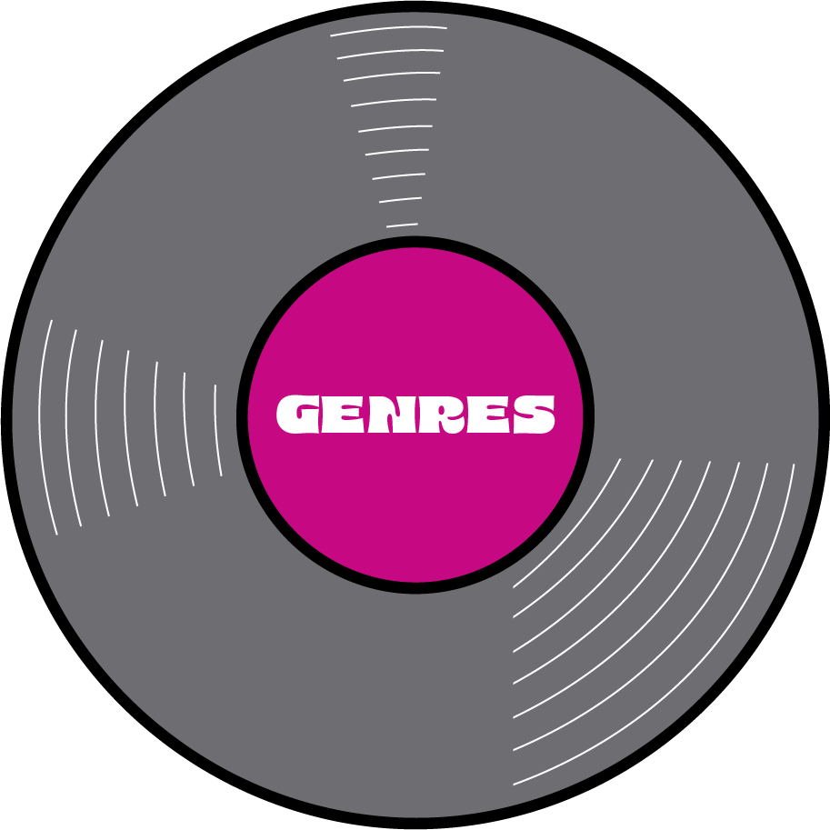
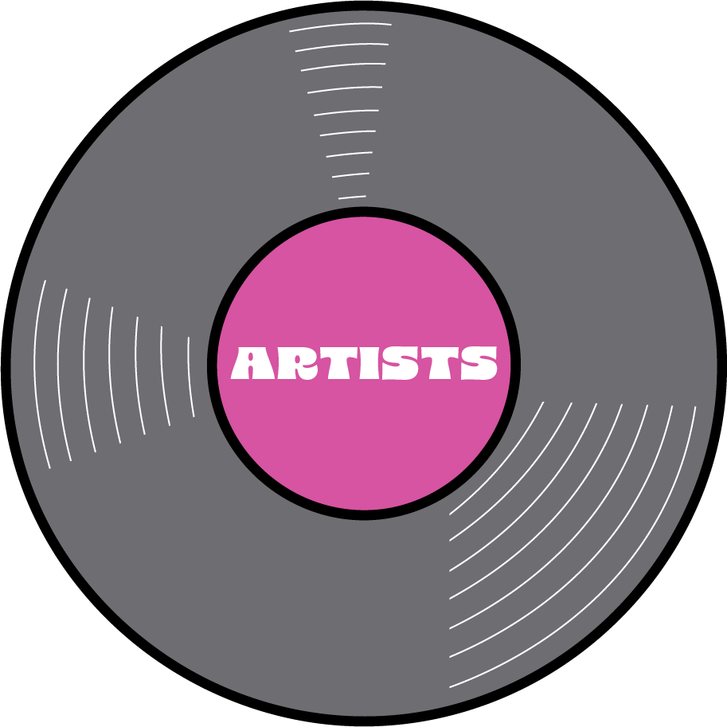
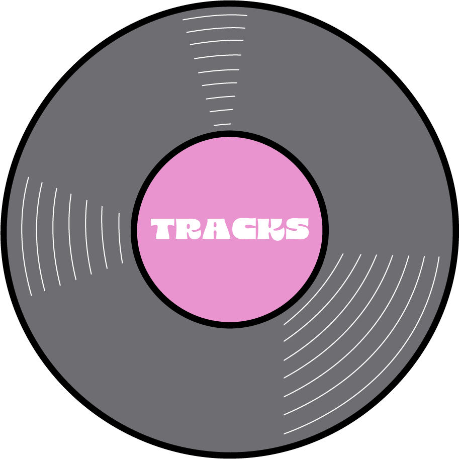
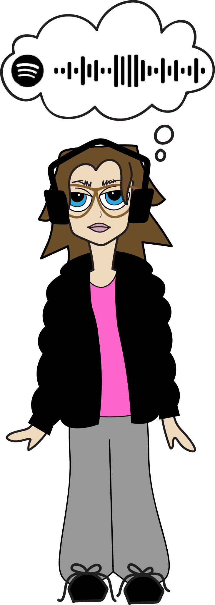

TOP SONG:
when you were mine
- PRINCE, DIRTY MIND
hover or click to explore!
HOME
NOTES
i'm noticing a shift in the music i've been listening to,
compared to the first couple weeks of this project. i'm still
listening to rap in the gym, but outside of the gym
i've been into funk, disco, and soul a lot more.
<
NOVEMBER 5 - 11
>

20.9% rap/hip hop; 16.5% funk/disco; 13.1% rock; 11.3% r&b/soul; 10.4% folk/ acoustic; 10.4% pop; 9.6% indie; 3.5% rock ballad; 2.6% jazz; 1.7% house/electronic

Of 53 artists, the top 3 most-listened-to were Prince, Drake, and Stevie Wonder.

Of 115 tracks, the most-listened-to song was When You Were Mine.
20.9% rap/hip hop; 16.5% funk/disco; 13.1% rock; 11.3% r&b/soul; 10.4% folk/ acoustic; 10.4% pop; 9.6% indie; 3.5% rock ballad; 2.6% jazz; 1.7% house/electronic
Of 53 artists, the top 3 most-listened-to were Prince, Drake, and Stevie Wonder.
Of 115 tracks, the most-listened-to song was When You Were Mine.
